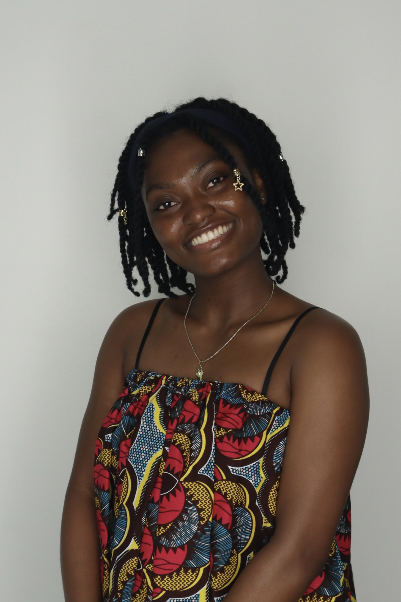

I'm a recent graduate who explores functional genomics and disease biology with an emphasis on translating insights into healthcare solutions. I'm passionate about research and cultural exchange. I write, create spaces for growth, and seek to understand the evolving possibilities of science in the world.

I grew up asking too many questions about myself and the world. Mostly, I wondered about the flow of life which turned my eyes to seek all things biology. Consequently, I am currently a recent graduate in biology, who loves to research and find the ways science connects to human health and real-world impact. My academic experiences have introduced me to experimental biology, and I am especially interested in understanding how molecular and cellular mechanisms can inform broader questions in health and medicine. How can I help to fix and bring creation back to perfect originality? - sounds impossible sometimes, but this is the question that plagues me when I see things amiss. My passion to solve problems draws me to research environments that are both rigorous and collaborative, where curiosity and teamwork drive meaningful discovery.
As an international student and foreign languages minor in French and Korean, I've grown an adaptability, cross-cultural awareness, and strong communication skills which I introduce to the spaces I am part of. These experiences have deepened my understanding and interest in community, inclusion, and the human side of science.
Outside of academics, I enjoy learning languages and engaging with different cultures - one of the ways I believe could bridge healthcare accessibility. I also love writing, and I love to cook. I volunteer toward Prison Library Projects while trying to remember scores from my last piano lesson, which unfortunately never works.
I look forward to contributing my skills and to continue building technical experience to work toward scientific and social work.
Endurance building, humbling, and great for thinking. The Sedona trails were eye opening.
Fermenting, braising, and attempting Ghanaian cuisine with Western ingredients - super interesting flavors.
Building knowledge through realistic biographies, historical content and almost all things fiction. Classics have me glued.
Learned for a semester. Hope to continue playing.
I'm always happy to hear from researchers, health professionals, biologists, language lovers or anyone who values learning or wants to chat. Don't be shy.
nyarkoahamps@gmail.com